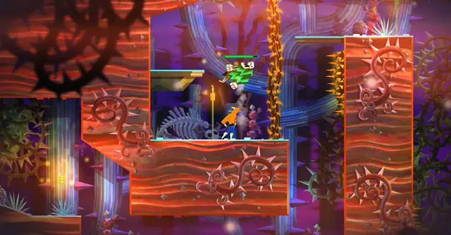
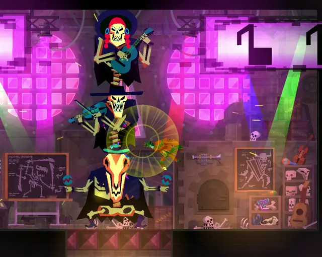
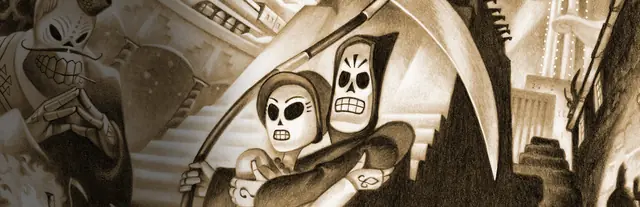
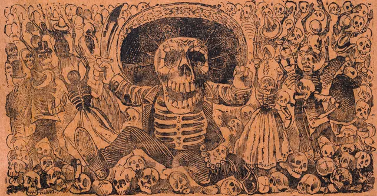
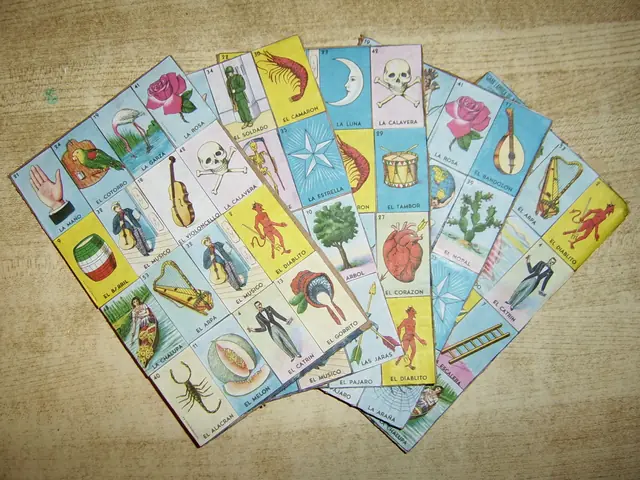
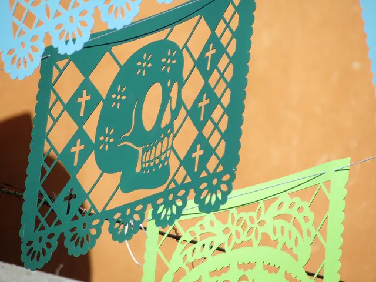
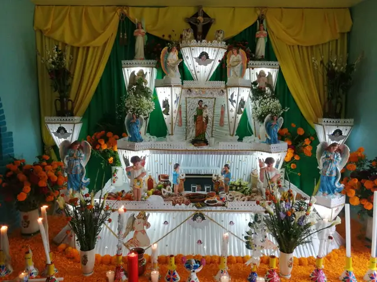
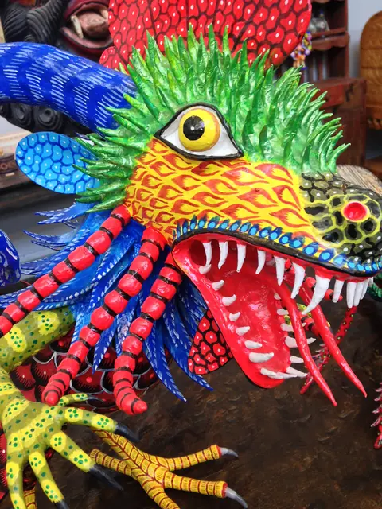
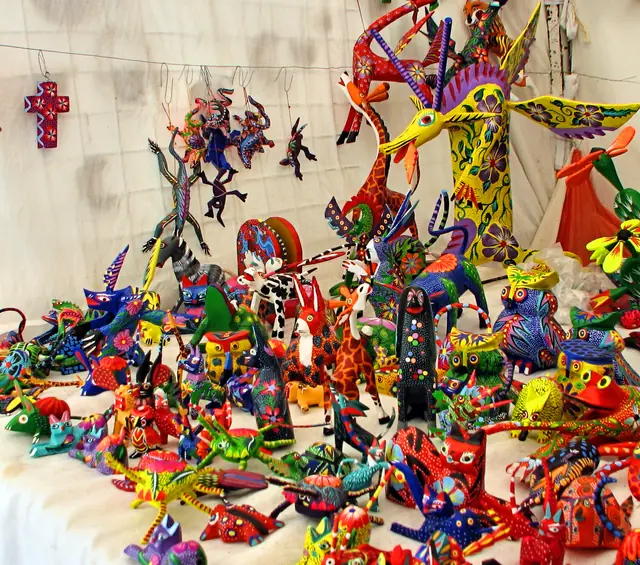
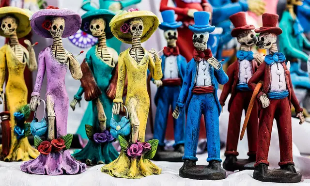

The feel
Day of the Dead, as Mexico's indigenous communities keep it, welcomes dead relatives home for a short visit. Families lay flower petals, candles and offerings along the path from the cemetery, and set out favourite dishes beside flowers and handicrafts such as paper cut-outs.1 Those crafts give the style its look. Tissue paper is chiselled into banners that move in the slightest breeze and stand for air on the altar,2,3 skeletons dress as people of every class and trade,4 and alebrijes join parts of several animals, real or imagined, painted in many bright colours.5
Augusto Quijano, who was born and raised in Mexico and led the concept art for Guacamelee! 2, puts the mood plainly: "It's more of a celebration of life than something somber."6,7 It mattered to him to show that the skeletons are fine.7 DrinkBox began from Mexican culture and folk art for their bright, colourful look,8 and in the sequel its art director made the living world look less alive than the dead one: "It's actually better to be dead."7 Tim Schafer first met this imagery in a folklore class at Berkeley, in José Guadalupe Posada's political cartoons, and fell in love with Day of the Dead long before he made Grim Fandango.9
- festive
- handmade
- candlelit
- irreverent
- remembering
- marigold-bright
Where it comes from
Papel picado comes from San Salvador Huixcolotla in Puebla, where it took shape in the second half of the 19th century, after tissue paper reached the haciendas' company stores around 1850.10,3 Before that, following a Mesoamerican tradition, farmers cut simple geometric shapes into thick amate bark paper with a knife.10 José Guadalupe Posada drew animated skeletons for the publisher Antonio Vanegas Arroyo from about 1890 to 1913, and one of them, a grinning skeleton in a plumed hat, was named Catrina in a 1930 book of his prints that Diego Rivera made with Frances Toor.4 In Mexico City the cartonero Pedro Linares made the first alebrije from paper and paste in 1930, to free himself of the impossible creatures he had seen in a fever at the age of 11.11 Tim Schafer's Grim Fandango, released in October 1998, started from "those little papier-mâché folk-art skeletons from Mexico",12 and DrinkBox's Guacamelee! (2013) started as a pitch by its concept artist Augusto Quijano, who was originally from Mexico.8
Core elements
Papel picado banners
Banners of tissue paper cut with chisels are an essential part of altars for the dead, and markets order hundreds of thousands of them to hang over houses, streets and squares.10 In Huixcolotla the 34-year-old cutter Roberto Carlos chisels a stack of 50 sheets at once along a plastic template, with straight, curved and zigzag chisels made in the town.10 In Miguel Reynoso's family workshop, four women alternate the colours as they glue the sheets along 5 metre cotton strings.10 On the altar the paper stands for air, because it is light enough to move.3
Calavera figures
Posada's calaveras show people of every class and occupation as skeletons, which scholars read as a reminder that death comes for all, and his Catrina wears a large plumed hat from European upper-class fashion.4 His broadsides were printed on thin, colourful tissue paper, and his photo relief etching gave the look of a woodcut in half the time.13 Folk-art skeletons in papier-mâché are simple shapes with the bones painted on the outside, which is what drew Tim Schafer to them.12
Alebrije patterns
An alebrije is a fantastic figure that combines parts of several animals, real or imagined, painted in many bright colours.5 Pedro Linares made the first ones in paper and paste in Mexico City,11 and the Zapotec towns of San Martín Tilcajete and Arrazola in Oaxaca carve them in copal wood.14 At the Jacobo and María Ángeles workshop in Tilcajete, symbols fill the gaps between rows of lines named after the lintels of buildings, and the style mixes Jacobo's geometric hand with María's curves.14
Mexican pink and marigold
In Huixcolotla the paper comes in lime green, Mexican pink, royal blue, bougainvillea, marigold and deep purple, a range that Miguel Reynoso says grew as customers asked for more colours.10 Mexican pink got its name at Ramón Valdiosera's New York fashion show of 6 May 1949, when an American socialite called it "un rosa mexicano"; in Mexico it was still called bugambilia, after a flower.15 Aryeh Domínguez Apac, who popularises pre-Hispanic culture, traces it to the red of cochineal dye and places bugambilia nearer purple.15 The UNAM ethnobotanist Leonardo Beltrán Rodríguez says marigolds (cempasúchil) were bred for stronger colour and scent, so that the dead could follow the path of petals to the altar more easily.16
Lotería cards
Where a bingo card has numbers, a lotería board has pictures, such as a calavera and a nopal cactus, and the images on the most popular boards go back to the late 19th century.17 A deck has 54 cards, and the caller announces each one with a rhyme, a pun or a saying, such as "Al pasar por el panteón, encontré una calavera" for the skull.18 Don Clemente Jacques's boards are the best known, and Posada drew a lotería of his own.17
Living and dead worlds
Each level of Guacamelee! has a living and a dead version with completely different palettes.6 In the sequel the living town of Villachula sits under slow drizzle, while in the dead world the rain stops and bright decorations hang into the distance.7 Grim Fandango is set entirely in the Land of the Dead, on a four-year journey adapted from the Aztec road to Mictlán.9
How to do it
Block out angular shapes
Simplify every character, prop and environment into angular, boxy shapes, the way Guacamelee! crossed Mexican folk art with the blocky, tiled art of classic platformers, and keep them rich with a hand-painted folk finish.19 Push the hero's costume and poses as far as they will go: Juan's luchador look was made as exaggerated and bold as possible.19 Animate the shapes as vector geometry instead of sprite sheets, which gave Guacamelee! 60 fps characters that scale up and down without resolution problems and use much less memory.8
Paint within a limited palette
Fit the bright, multicoloured palettes of Mexican art into a limited, stylised palette, so the game feels unified and is not dismissed as a children's game.19 The trick, says Guacamelee!'s art director Stephane Goulet, is plenty of variation inside the limit: an asset that looks like one colour holds many painted colours when you look closely.19 Mix Mexican pink as 100% magenta with 46% yellow and a touch of black.15
Cut the banners
Draw half the motif on 8 1/2 by 11 inch paper, cut it in half, fold three sheets of tissue in half lengthwise to 5 1/2 by 8 1/2 inches, pin the pattern on and cut through them all, leaving about an inch at the top for the string.2 Unfold the sheets, lay them 1 inch apart, fold each top edge over the string and glue it.2 Roberto Carlos, who cuts stacks of 50 sheets in Huixcolotla, takes most care over the smallest openings, because one tear there spoils the whole sheet.10
Decorate in rows of symbols
Seal a carved figure with one colour all over, and start the design from that base.14 Divide the body with rows of lines, fill the gaps between them with symbols, outline them, add gold leaf where you want it and finish with varnish.14 Gabriel Sosa, a carver from San Martín Tilcajete, also works in icons for happiness, movement and respect from the Zapotec ritual calendar, the Piye.5
Paint the bones on the surface
Keep skeletons as simple shapes and put the bones in the texture, the way the papier-mâché figures have them painted on.12 Grim Fandango's characters have their faces painted onto their skulls and talk through changes to those texture maps, not to the 3D model, which spared the team from rendering soft flesh.12 Schafer's advice: "Instead of fighting the tech limitations of 3D, you have to embrace them and turn them into a style."12
Draw a lotería deck
Draw a deck of 54 picture cards that match the pictures on the boards,18 and give each player a board of 16 pictures in a different set or arrangement.17 Write each card a rhyme, pun or saying for the caller to sing out, such as "Al pasar por el panteón, encontré una calavera" for the skull.18 Start from Posada's board and swap in places, people and ideas that matter to your own world.17
Recolour the level for the dead
Build the living version of a level first, recolour it as the first pass of the dead version, then replace and add decorations and props until it is finished, keeping the two layouts close.6 Give the two worlds completely different palettes.6 For Guacamelee! 2 the team made every background dark and the living world less alive than the dead one.7
Cheat sheet
- Level palettes
- Two per level, living and dead, on a similar layout6
- Mexican pink
- CMYK 100% magenta, 46% yellow, a touch of black15
- Banner string
- 5 m cotton thread, colours alternated10
- Home banner
- 8 1/2 x 11 in tissue folded to 5 1/2 x 8 1/2, hung 1 in apart2
- Paper colours
- Lime green, Mexican pink, royal blue, bougainvillea, marigold10
- Character animation
- Vector geometry at 60 fps8
- Alebrije finish
- Base coat, rows of symbols, outline, gold leaf, varnish14
Do
- Show death as a celebration of life. Quijano wanted Guacamelee!'s skeletons to look fine, as if they had retired or were doing what they always wanted to do.7
- Have someone from the culture check the details. Quijano reviewed every sign, billboard and storefront in Guacamelee! 2, down to the accents, and got a photo of his cousin's hammock so the artists could hang theirs properly.7
- Use regional details. Guacamelee!'s first town paints the lower half of its tree trunks white, as people do with chalk and water on the peninsula where Quijano grew up, to keep the ants off.7
- Give colour-coded things their own shapes. When colour-blind players could not tell Guacamelee!'s shield colours apart, the art director answered with different silhouettes and shapes.7
- Research the themes as well as the details. Schafer set out to capture "not just specific details and the words, but also the themes and feelings" of the folklore.9
Avoid
- A drab, violent, one-note Mexico waiting for an outsider to save it. Quijano, who pitched Guacamelee!, says much of its genesis was seeing Mexico shown that way, and he wanted to show the other side.8,7
- Every colour at full strength. DrinkBox's round, bright first game was taken for a children's game, so Guacamelee! balanced Mexico's bright palettes with a more unified feel.8,19
- Copying the old Lotería deck card for card. Artists have changed cards that carry outdated or racist ideas.17
- Passing off European ideas as Aztec belief. In Grim Fandango how you lived decides your afterlife, which is more European than Aztec: in the Florentine Codex, the soul's fate depended on social role and the way a person died.9
Tools and tutorials
- Papel Picado Activity
Mexic-Arte Museum's template and steps for folding, cutting and hanging a banner.2
- The Art of Making Guacamelee! - From Folklore to Finish
Augusto Quijano on turning a country's heritage into a game world, wrong turns included.
- El Juego de Lotería
Print Posada's board from the Library of Congress and remake it with pictures that matter to you.17
Palette
Calaca purple, Mexican pink, bone and night come from the Guacamelee! skeleton band art, marigold from the flower carts in Coco's Santa Cecilia, turquoise from a clay Catrina's dress, alebrije red from Ricardo Linares García's alebrije and papel teal from a papel picado banner in Aguascalientes.
Feel the vibe
Listen
A town theme for the side where the skeletons live; good company while you paint calaveras.
YouTubeFor the noir side of the style, where the skeletons wear suits instead of flowers.
YouTubeA festive score for the night of the ofrenda, to play while you block out marigold and papel picado colours.
YouTubeSlow and mournful: the remembering that sits under all the bright colour.
YouTubeFestive and sad at once, like a family altar covered in flowers.
YouTube
More references










Games
- Grim Fandango
Art Deco, Mexican folk art and a 1940s gangster film in one look. Study how folk-art skeletons became texture-mapped 3D characters.12
- Guacamelee!
Part Mexican folk art, part 16-bit game. Study its angular, boxy shapes and the colour packed into a limited palette.19
- Guacamelee! 2
Study the dark backgrounds, the new jade and gold materials, and a dead world brighter than the living one.7
Film, art and more
- La Calavera Catrina
A smiling skeleton in a large hat, first printed months after Posada's death on a broadside mocking garbanzo sellers who dressed in European fashions.4
- Dream of a Sunday Afternoon in the Alameda Central
Rivera put Catrina at the centre in a white dress and feather boa, holding Posada's arm and the hand of Rivera as a child.4
- Alebrijes of Pedro Linares
Paper-and-paste creatures. Diego Rivera ordered pieces in the 1940s, and more than 80 per cent of Linares's direct descendants work in cartonería today.11
- Papel picado of San Salvador Huixcolotla
Declared cultural heritage of the State of Puebla in 1998, for its hand-chiselling, which replaced the scissors used at first.3
- Juego de lotería
A lotería designed by Posada and printed in Mexico City, now in the Library of Congress, which suggests printing it and remaking the board with your own pictures.17
- The Book of Life
DrinkBox credits it and Coco with showing more people Latin American perspectives.7
- Coco
Study the marigold petal bridge, an homage to the marigold arches and petal paths of Mexican cemeteries in which every petal has its own light, and a Santa Cecilia kept muted beside the rowdy colours of the Land of the Dead.20
Sources
- 1Indigenous festivity dedicated to the dead
- 2Arte para todos: El Día de los Muertos, Papel Picado Activity
- 3Hacer papel picado, un oficio que perdura en Puebla pese al desinterés de los jóvenes
- 4Catrina
- 5Gabriel Sosa, artesano creador de alebrijes de madera al estilo Tilcajete, Oaxaca
- 6Extended Play: How Guacamelee! went from design pitch to indie sensation
- 7The world of 'Guacamelee! 2'
- 8Postmortem: DrinkBox Studios' Guacamelee!
- 9Exhuming Grim Fandango’s Mexican folklore inspirations
- 10Día de Muertos en Huixcolotla: el papel picado mexicano que cruza fronteras
- 11El legado de Pedro Linares sigue vivo en la tradición de la cartonería mexicana
- 12Grim Fandango
- 13Skull and Cross Hairs: Revolutionary-Era Mexican Broadsides Took Aim at Political Elite
- 14El arte de los alebrijes y su mexicanidad puesta en el mapa
- 15La moda le dio su nombre al rosa mexicano
- 16Cempasúchitl, la olorosa y colorida flor que México heredó al mundo
- 17El Juego de Lotería
- 18Lotería en la clase de conversación
- 19Road to the IGF: Guacamelee!
- 20A Night to Remember: Coco